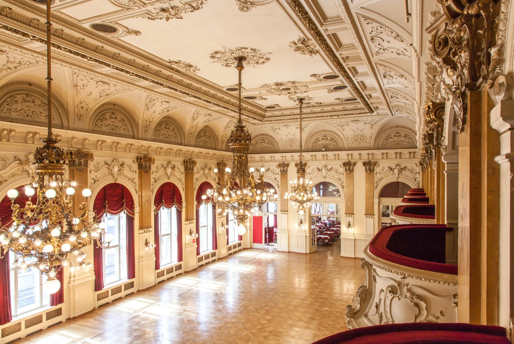

Sitzplätze, Logen und Tische
Die Logen befinden sich im zweiten Stock der Festsaalgalerie.
Von einer Loge haben Sie einen exzellenten Blick auf die Eröffnung und auf die Tanzfläche und genießen Getränkeservice in der Loge.
Die Loge bietet Platz für max. 4-5 Personen. Zusätzlich gibt es noch Tische der Kategorie 2 im Oberdeck und Kategorie 3 auf der Ebene des Festsaals für bis zu 12 Personen.
Blick aus einer Balkonloge/Kategorie 1 auf den Festsaal

Blick vom Festsaal zur Bühne mit Balkonlogen/Kategorie 1 links
Übersichtsplan Balkonlogen Kategorie 1 und Tische Kategorie 2 in der Festsaalgalerie/Oberdeck
Übersichtsplan Tische Kategorie 3 im Bildersaal
Loge/Tisch kaufen
Balkonloge Kategorie 1 (25€ pro Person)
- 4-5 Personen
- Oberdeck
- exzellente Sicht auf den Festsaal und die darin aufgeführten Tanzeinlagen
- Oberdeck-Bar direkt bei der Loge
Oberdeck-Tische Kategorie 2 (15€ pro Person)
- 10 Personen
- Oberdeck
- Oberdeck-Bar direkt bei den Tischen
Tische Kategorie 3 (13€ pro Person)
- 4-12 Personen
- Neben dem Festsaal
Falls Sie einen Schüler/eine Schülerin als Ansprechperson haben, bitten wir Sie den Wunsch nach einer Loge/einem Tisch ihm/ihr mitzuteilen.
Falls die gewünschte Loge/der gewünschter Tisch noch frei ist, wird diese für Sie reserviert und die Zahlung kann entweder in bar über Ihre Ansprechperson erfolgen oder direkt auf unser Konto überwiesen werden.
Falls Sie keine direkte Ansprechperson haben, bitten wir Sie uns persönlich auf Ballkarten@outlook.com eine E-Mail zu schreiben, welche Loge/welchen Tisch Sie gerne hätten.
Wir antworten so schnell als möglich.